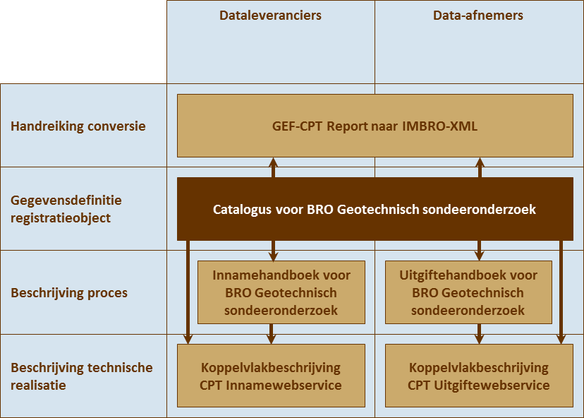

Het Geotechnisch sondeeronderzoek is een van de registratieobjecten in het domein van bodem- en grondonderzoek.
In dat domein gaat het om onderzoek dat er op gericht is gegevens te produceren over de opbouw en de eigenschappen
van bodem en ondergrond zonder dat daarvoor direct een bepaald wettelijk of beleidsmatig kader bestaat. Vaak wordt
het onderzoek uitgevoerd omdat men de opbouw en de eigenschappen van de ondergrond moet kennen voor het realiseren
van projecten in de grond-, weg- en waterbouw, of voor het onderhoud van bestaande infrastructuur.
Het voorliggende document is nog niet vastgesteld door het Ministerie van Infrastructuur en Milieu. Op 23 maart 2016
is de conceptversie verstuurd naar Geonovum. Die conceptversie is, behoudens kleine redactionele verschillen, gelijk
aan dit document.
Inleiding
Deze documenten hangen samen zoals hieronder afgebeeld.

Samenhang tussen documentatie
Leeswijzer
Hoofdstuk 1 geeft het doel en de doelgroep, de samenhang met andere documenten en de versiehistorie van deze catalogus.
Hoofdstuk 2 behandelt enkele algemene aspecten van het BROsysteem en behandelt begrippen van algemene aard.
Hoofdstuk 3 legt uit wat geotechnisch sondeeronderzoek is, wat de plaats is van het object in de gegevenssystematiek
van de BRO en vertelt wat de benadering is geweest bij het opstellen van de gegevensdefinitie.
Hoofdstuk 4 geeft de definitie van het registratieobject, van de delen waaruit het is opgebouwd, de entiteiten, en
van de eigenschappen van die delen, de attributen.
Hoofdstuk 5 ten slotte geeft de definitie van de codelijsten waarnaar in hoofdstuk 4 verwezen wordt.
Geotechnisch sondeeronderzoek
Het Geotechnisch sondeeronderzoek is een van de registratieobjecten in het domein van bodem- en grondonderzoek.
In dat domein gaat het om onderzoek dat er op gericht is gegevens te produceren over de opbouw en de eigenschappen
van bodem en ondergrond zonder dat daarvoor direct een bepaald wettelijk of beleidsmatig kader bestaat. Vaak wordt
het onderzoek uitgevoerd omdat men de opbouw en de eigenschappen van de ondergrond moet kennen voor het realiseren
van projecten in de grond-, weg- en waterbouw, of voor het onderhoud van bestaande infrastructuur.
Het onderzoek kan direct in het veld worden uitgevoerd, maar vaker is het een combinatie van veld- en laboratoriumonderzoek.
Naast geotechnisch sondeeronderzoek omvat het domein nog vier registratieobjecten:
geo-elektrisch onderzoek
seismisch onderzoek
booronderzoek
profielonderzoek
De vijf registratieobjecten staan op zichzelf en hebben eigen locaties.
Voor de wet valt het geotechnisch sondeeronderzoek overigens onder het begrip verkenning. Een verkenning is in de wet
gedefinieerd als een waarneming van de opbouw van de ondergrond op een punt, langs een lijn of in een vlak.
Sonderen
Geotechnisch sondeeronderzoek is de formele naam die in de BRO gebruikt wordt en het begrip verwijst naar een onderzoekstechniek
die gewoonlijk sonderen wordt genoemd. Bij sonderen wordt de informatie direct in het veld verzameld. Sondeeronderzoek
is binnen het domein van de geotechniek ontwikkeld. Bij dit type onderzoek wordt een sondeerconus gelijkmatig de
grond ingedrukt en terwijl de conus naar beneden gaat, worden quasi-continu waarnemingen gedaan van fysieke grootheden.
De techniek is oorspronkelijk ontwikkeld om inzicht te krijgen in het dragend vermogen van de ondergrond om op basis daarvan
funderingen te ontwerpen. De grootheid die daartoe gemeten werd en wordt, is de weerstand die de conus op de weg
naar beneden ondervindt. In de afgelopen decennia heeft de sondeertechniek zich sterk ontwikkeld en inmiddels is
het mogelijk een breed scala aan grootheden te meten. De techniek wordt in Nederland overigens nog steeds in hoofdzaak
gebruikt voor het ontwerp van funderingen, maar de resultaten kunnen ook veel breder worden gebruikt omdat zij in
meer algemene zin inzicht geven in de eigenschappen en de opbouw van de ondergrond.
Registratieobject Geotechnisch sondeeronderzoek
Een registratieobject is de belangrijkste eenheid van informatie in de basisregistratie ondergrond. Een registratieobject
bestaat uit delen (entiteiten), en de delen hebben eigenschappen (attributen). Om het geotechnisch sondeeronderzoek
als informatieobject goed te kunnen definiëren, wordt vanuit een bepaalde benadering gedacht. Deze benadering wordt
hieronder toegelicht.
Het feitelijke sondeeronderzoek levert een resultaat en dat bevat informatie over het deel van de ondergrond dat op
een bepaalde locatie in het veld middels een sonde is onderzocht. Die informatie bestaat uit waarden die zijn bepaald
van eigenschappen van het onderzochte deel van de ondergrond.
In deze paar zinnen zijn de belangrijkste entiteiten van geotechnische sondeeronderzoek in de basisregistratie ondergrond
eigenlijk benoemd: er is sondeonderzoek uitgevoerd op een specifieke locatie aan een specifiek deel van de ondergrond
en dat onderzoek heeft resultaten opgeleverd. De resultaten geven de waarden van eigenschappen van het onderzochte
deel van de ondergrond.
In het denken over wat het object geotechnisch sondeeronderzoek is en hoe de informatie van dat object voor de basisregistratie
ondergrond moet worden gemodelleerd staat het begrip onderzoek centraal. Het begrip onderzoek koppelt een resultaat
aan een object van onderzoek en in het geval van de basisregistratie ondergrond is dat een deel van de ondergrond.
Onder onderzoek moet men in essentie aan een activiteit, een proces of een aaneenschakeling van activiteiten of processen
denken. Waarom onderzoek een centrale plaats in het denken inneemt, behoeft wel enige toelichting omdat men in eerste
instantie zou denken dat de informatie waar het allemaal om draait, het resultaat van het onderzoek is. Inderdaad
gaat het uiteindelijk om het resultaat van onderzoek, dat is immers de informatie die men wil gebruiken. Maar de
reden dat het onderzoek in de modellering centraal wordt gesteld, is dat wat een geotechnische sondering uniek maakt
niet het resultaat of het object van onderzoek is, maar dat er onderzoek is gedaan.
Het onderzoek is de entiteit die het moeilijkst in gegevens kan worden vastgelegd. Onderzoek is veelal een aaneenschakeling
van activiteiten en de uitvoering van ieder van die activiteiten kan beïnvloed worden door een groot aantal factoren.
Het resultaat van het onderzoek kan daarmee niet los worden gezien van het proces waaruit het voortkomt. We moeten
ons daarbij voor ogen houden dat het doel van de basisregistratie hergebruik van informatie is. Om het gebruik van
het resultaat van het onderzoek nu en in de toekomst mogelijk te maken, moeten juist de gegevens die het proces beschrijven
geregistreerd worden. Anders gezegd, het leidend principe in de modellering is eigenlijk dat informatie per definitie
het resultaat is van een proces (of liever een aaneenschakeling van processen) en dat de gebruiker dat proces moet
kennen om inzicht te krijgen in de waarde die de informatie heeft in relatie tot het doel waarvoor hij de informatie
wil gebruiken.
Om het geotechnische sondeeronderzoek als eenheid te definiëren wordt vanuit het proces gedacht. De kernvragen daarbij
zijn: waarmee begon het proces dat tot een geotechnische sondering heeft geleid en waarmee eindigde het?
Voor de basisregistratie ondergrond begint de geschiedenis bij het uitvoeren van een opdracht tot onderzoek en eindigt
de geschiedenis op het moment dat alle gegevens uit het onderzoek correct in de basisregistratie ondergrond zelf
zijn vastgelegd. Van de opdracht tot het uitvoeren van sondeeronderzoek worden geen gegevens expliciet vastgelegd.
Wel wordt er bij de registratie in de BRO impliciet informatie over de opdracht vastgelegd omdat gespecificeerd wordt
binnen welk kader de gegevens aan de registratie worden aangeleverd.
Domeinmodel
Domeinmodel Geotechnisch sonderonderzoek
Domeinmodel Geotechnisch sonderonderzoek
Geotechnisch sondeeronderzoek
Geotechnisch sondeeronderzoek is het geheel van gegevens dat betrekking heeft op een specifiek sondeeronderzoek dat
op een specifieke locatie in Nederland is uitgevoerd en dat door of onder de verantwoordelijkheid van een bepaalde
bronhouder is aangeleverd aan de registerbeheerder van de BRO en vervolgens onder zijn verantwoordelijkheid in de
registratie ondergrond is opgenomen. De activiteiten van het sondeeronderzoek omvatten in ieder geval het op locatie
doen van metingen met een sondeerapparaat en de uiteindelijke rapportage van de resultaten aan de opdrachtgever.
Gegevens over de plaats waar het onderzoek is uitgevoerd worden over verschillende entiteiten verdeeld.
Registratiegeschiedenis
De registratiegeschiedenis van een geotechnisch sondeeronderzoek geeft de essentie van de geschiedenis van het object
in de registratie ondergrond, de zgn. formele geschiedenis. De registratiegeschiedenis vertelt bijvoorbeeld wanneer
een object is geregistreerd en of er na registratie correcties zijn doorgevoerd.
Sondeeronderzoek
Het sondeonderzoek vormt de kern van het geotechnisch sondeeronderzoek. Het is de typering van het geheel van activiteiten
dat binnen het sondeeronderzoek is uitgevoerd om met het sondeerapparaat de waarde van bepaalde parameters te meten
en die metingen voor de opdrachtgever tot een resultaat te bewerken. De nauwkeurigheid van de gemeten parameters
wordt impliciet verantwoord doordat het geotechnisch sondeeronderzoek in zijn geheel aan een bepaalde norm voldoet.
Het sondeonderzoek koppelt de resultaten die eruit voortkomen aan het door de sonde bemeten deel van de ondergrond
(traject). Het sondeonderzoek bestaat altijd uit het uitvoeren van een conuspenetratietest. De conuspenetratietest
kan één of meer keren onderbroken worden om een dissipatietest uit te voeren. Dat is een ander type test, met een
eigen resultaat. De meetresultaten worden altijd bewerkt. De activiteiten die uitgevoerd zijn om de metingen te bewerken
voor de uiteindelijke rapportage worden apart vastgelegd (de bewerking).
Resultaat
Het resultaat geeft de waarden van de bepaalde parameters op bepaalde posities in het sondetraject (conuspenetratietest
resultaat), dan wel het verloop van de waarde van gemeten parameters op één bepaalde positie in de tijd (dissipatietest
resultaat). Sommige parameters hebben betrekking op de positie van de meting, maar de meeste parameters geven eigenschappen
van de ondergrond weer.
Sondeersapparaat
Het sondeerapparaat is een typering van het apparaat dat bij het sondeeronderzoek is gebruikt. Het belangrijkste onderdeel
van het apparaat wordt de sondeerconus genoemd en dat is het eigenlijke meetinstrument oftewel de sonde. De sondeerconus
bestaat uit twee functionele onderdelen, de kleefmantel en de conuspunt. De conuspunt omvat niet alleen het kegelvormig
uiteinde van de sondeerconus maar ook het cilindrisch deel daar direct boven. De kleefmantel zit daar weer boven.
Voor elk van de gemeten parameters kan vóór en na het uitvoeren van het sondeonderzoek de waarde worden afgelezen
die het apparaat aangeeft zonder belasting (nulmeting). De nulmetingen worden gebruikt om vast te stellen of en in
hoeverre het apparaat tijdens het sonderen aan betrouwbaarheid heeft ingeboet.
Aanvullend onderzoek
In sommige gevallen worden er in het veld aanvullend onderzoek gedaan. Het gaat om waarnemingen die vaak met het blote
oog worden gedaan. Wanneer de ondergrond tot een bepaalde diepte wordt weggegraven voordat met het sondeonderzoek
wordt begonnen, wordt er een beschrijving van de weggehaalde lagen gemaakt (verwijderde laag).